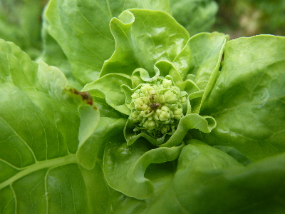
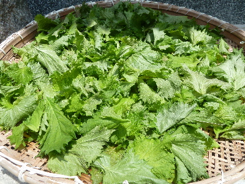
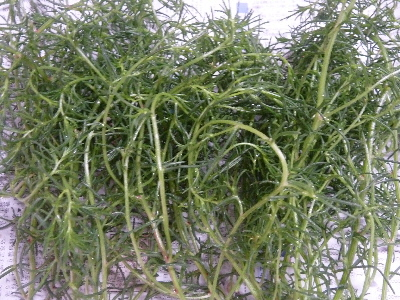
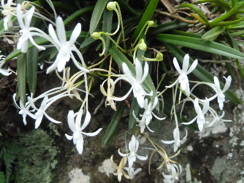
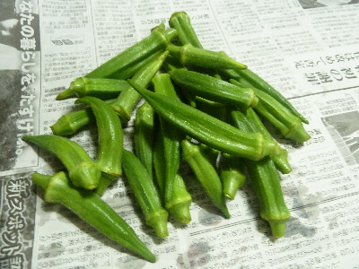

サンチュに蕾が出来ました。
2017/07/23
沢山食べたサンチュですが、蕾ができたのでもう終わりです。

食べ過ぎってくらい食べたので、丁度いいタイミングかな。
どんな花が咲くでしょうね。
2017/07/23
沢山食べたサンチュですが、蕾ができたのでもう終わりです。

食べ過ぎってくらい食べたので、丁度いいタイミングかな。
どんな花が咲くでしょうね。
2017/07/15
沢山あるけど、大葉ってなかなか食べれないです。

ドライハーブになるかなと思い、干してみました。
細かく刻んだ冷凍大葉はチャーハンやおにぎり等に使っていたんですが、ドライも同じ要領で使えるかな。
（これは光に当てすぎて、茶色くなって失敗しました。）
2017/07/09
水洗いしてたら、なんとなく海藻？って気がちょっとだけしました。

雑草感も少しありました。
食べ感想は、あんまり味がなかったです。
ドレッシングで、好みの味に仕上げるといいのかな？
個人的にはマヨネーズとは相性が悪いかなと思いました。
しばらく収穫の時期があるので、色々味を試そうと思います。
好みの食べ方らが見つからなかったら、来年は植えない。
2017/07/08
蘭の仲間はなんとなく派手な感じがします。

木や岩にくっつけていっぱい増やしたいと思うんですが、管理するのが大変そうと思うと何もできないです。
条件のいい場所に、ちょっと置くくらいがいいかな。
2017/07/02
既にナスやトマト、キュウリの収獲は始まっていたんですが、オクラも採れ出しました。

久々に食べたんですが、オクラは美味しいな。
過去の日記
熱中症に注意しましょう。